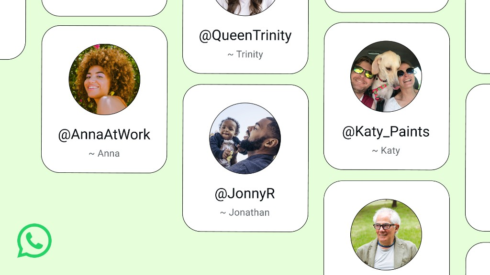
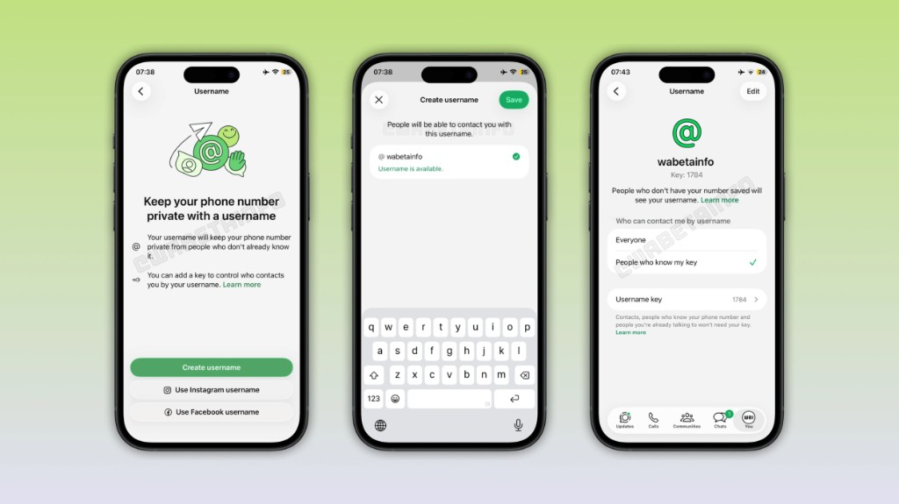

Essay · Privacy
Usernames Won't Save You: What WhatsApp's Latest "Privacy Feature" Actually Fixes
WhatsApp's new usernames close a real reachability gap, but they do not change what the platform can read, collect, or observe about your activity.
On 29 June 2026, WhatsApp opened reservations for a feature its 3 billion users have been asking for since Telegram made it look easy… usernames. Once fully rolled out later this year, you'll be able to give someone a handle instead of your phone number, and, in theory, never hand your digits to a stranger again.
The coverage has been almost uniformly warm. It's being called one of the most significant privacy changes WhatsApp has made in years, and in one narrow sense, that's fair. But "privacy feature" is doing a lot of work in that sentence, and it's worth being precise about what it actually means before treating this as evidence that WhatsApp has turned a corner.

WhatsApp username reservations. Source: WhatsApp.
The three questions any privacy feature has to answer
When you're assessing whether a change actually improves privacy for a client, an employer, or just for yourself, it helps to break the claim into layers. For a messaging platform, there are three:
Who can reach me? (reachability)
What someone needs to know about you before they can make first contact. This can be a phone number, an email address, or a username. This is the layer that determines how findable you are to a stranger.
What's inside my messages? (content)
Whether the substance of what you say is shielded from the platform itself, not just from other users. This is the layer of encryption claims that are actually about.
What can the platform see about my activity? (metadata)
Who you talk to, how often, when, from where, even if it can't read what's said. This is the layer that tends to get ignored, because it's invisible in a way content and reachability aren't.
Usernames answer exactly one of those. They don't touch the other two.
That's not a criticism of the feature itself, it's a reminder that a genuine improvement in one layer can get marketed as a wholesale fix for all three.
What usernames actually change
The process is very straightforward. So, once you've claimed a handle (three to 35 characters, set via Settings > Account > Username), people can message you using it instead of your number. There's no public directory and no autocomplete, so someone has to know your exact username to contact you the first time, and you can layer an optional "username key" on top, a short code that has to accompany the username before a first message goes through.

Username setup and key controls on iOS. Source: WhatsApp.
This can solve a real fix for a real friction point, such as:
- Handing your number to a seller in a marketplace group
- A stranger at an event, a new colleague.
It closes a gap Telegram has held over WhatsApp for years and puts WhatsApp roughly level with Signal, which added usernames back in 2024.
What it doesn't touch
The rollout lands in the middle of an unresolved argument about what WhatsApp's end-to-end encryption actually guarantees, with the platform's content-access claims currently the subject of active litigation. Usernames don't move that argument forward in either direction; a masked identity says nothing about what happens to the content once a conversation starts.
The bigger gap is metadata. Encryption protects the content of a message; it was never designed to protect the fact of who's talking to whom, how often, and when. That metadata layer, not message content, is where most of the platform's privacy controversies have actually originated, and a username rollout does nothing to change what the platform can still observe about your activity. You're harder to find by number. You're not harder to profile.
The control you can undo yourself
There's a more immediate, individual risk worth flagging, and it's one people are likely to get wrong in the first few weeks of the rollout, that is, what you actually put in the username field.
The entire design intent of the feature is that people can find and message you using the handle alone. That's the opposite of a private field; it's a semi-public lookup key, deliberately less discoverable than a phone number but discoverable all the same to anyone who has it. If you set that handle to your real full name, you haven't adopted a privacy feature.
You've built a searchable identifier and then advertised it as one, which is precisely what a phone number was not; nobody could reverse-search you from a string of digits alone. A name-as-username can be cross-referenced against LinkedIn, Instagram, and a company directory in seconds.
This is the kind of control WhatsApp can't protect you from, because it's not a platform failure, it's a configuration choice sitting entirely with the user, which is exactly where most real-world data exposure actually happens.
A working checklist
For anyone rolling this out for themselves, or advising others to, please consider the following:
- Don't default to your real name. Use a handle unrelated to your legal name, employer, or other social handles, unless discoverability is the point (creators, businesses).
- Set the username key. Set the username key if you want a genuine barrier against cold first contact, not just obscurity.
- Treat this as reachability hygiene, not data protection. It reduces the number of people who can find you. It does not reduce what the platform collects, what a counterparty can screenshot and forward, or what a subpoena might eventually reach.
- Re-apply the three-layer test to the next privacy announcement. From WhatsApp or anyone else. Ask what it changes: who can reach you, what's inside the message, or what the platform can see. Most announcements only ever move one dial and get credited for moving all three.
The instinct to welcome this change is the right one. The mistake is stopping the analysis there.